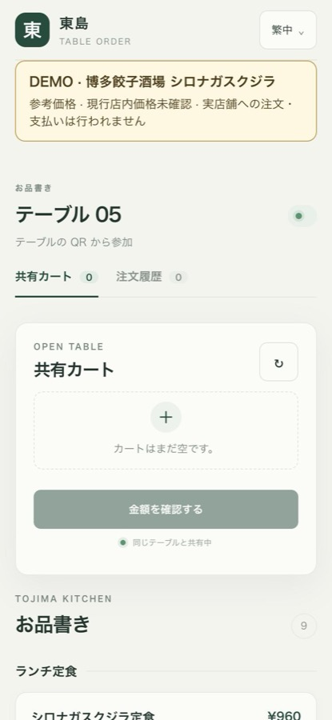
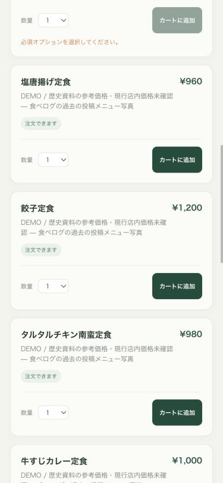

data-surface 切換，涵蓋 MOD-05 現在與 MOD-02/03/07 未來。D 也可以看作「只繼承方法」的選擇性繼承。本報告把 C 定義為搬入 Sheet 的資產（token 值、CSS、元件），D 則以 Tojima 自己已驗收畫面使用的綠色 token 為基底，只重新實作被驗證過的機制。差別在於有沒有搬資產：不搬，就避開 IP 歸屬未定的問題，也不會出現兩種視覺語言並存。
分數為研究者依下方證據所作的判斷評分（1–5），非量測值，比較的是各方案的完整計畫（不是只比第一包）。權重依「Mobile Order 優先、但需涵蓋整套 SaaS」設定。在這組評分下 D 每一項都不低於其他方案，所以結論不受權重影響；但 D 是看過 A–C 的弱點後組合出來的，評分本身仍需 Owner 檢視。D 的風險列於表後。
| 評估項目（權重） | A 沿用 Tachiko Sheet | B 完全重新設計 | C 選擇性繼承（搬資產） | D 演進式自有系統＋借方法 |
|---|---|---|---|---|
| 顧客手機點餐適配（25%） | 132px 目標、14px 內文、無動態、冷紫色；為桌面試算表設計 | 4可完全為手機設計，但從零起步 | 3顧客端仍需新設計；搬來的部分用不上 | 5觸控優先 48px、16px 內文、底部 sheet、常駐購物車列；已用原型驗證 |
| 整套 SaaS 涵蓋（20%）KDS、店員、後台、MOD-07 白標 | 2只適合後台；僅亮色，KDS 不可用；無多租戶品牌 | 4可規劃全部，但需更長時間 | 3後台像 Sheet、顧客端像別的產品，兩種語言 | 4四種表面模式＋品牌層；後台元件尚待 MOD-02/03 需求 |
| 治理／IP（15%）文件 05：不混用 Tachiko 商標與資產 | 1直接沿用 Tachiko 產品資產；Sheet 授權未定 | 5完全自有 | 2搬入的程式碼與 token 值歸屬不清 | 5自有實作；只參照公開的 WCAG 方法 |
| MVP 成本與對已驗收畫面的衝擊（20%）ADR-0006：不為統一而重寫 | 2全面換色與密度＝重寫 P-78/P-79 畫面 | 1最慢；P-75 明定 MVP 不啟動 Figma redesign | 3中等；需逐一移植與改值 | 4完整計畫仍需改顧客端版面（DS-2），但可分五包、每包獨立上線；第一包外觀延續 |
| 品質可驗證性（10%） | 4Sheet 有對比度門檻 | 3需重建驗證機制 | 4可搬門檻 | 5門檻已實作：72 組 token 配對＋2,000 個隨機店家色 0 失敗 |
| 維護性／單一來源（10%） | 2Sheet 主樣式檔 2026-09-12〜10-18 有 58 個非 merge commit；搬入後需決定追蹤上游或分岔 | 3取決於新流程 | 2搬入的值與 Sheet 上游會分岔，需決定是否追蹤 | 4token 檔是唯一來源；Figma 僅為選用鏡像 |
| 加權總分 | 1.80 | 3.35 | 2.85 | 4.50 |


styles.css 中 font-size ≤ 11px 的宣告（9px 有 19 處）；含 Catalog 後台的全部 UI CSS 為 65 / 111（9px 22 處）--muted（UI CSS 中 27 處引用）文字對比，未達 AA 4.5#d2a36b，未達非文字 3:1範圍：web/src/ui/*.css @ 5d82bce（以 grep 計算，指令見附檔 audit-commands.txt）。截圖取自 isolated demo（operationstest -demo-shironagasukujira，375×812）。
以 DEMO 店 シロナガスクジラ 的 9 個可點餐品項與「ごはんの量」必選選項建構。全部顏色、字級與尺寸都取自上方提案的 token。可切換語言、店家品牌色與網路狀態；點商品 → 選項 → 共用購物車 → 確認金額 → 訂單狀態。此原型不連接任何 API，也不進行付款。
以下三個樣本與上方手機使用相同的 CSS 類別，只有容器上的 data-surface 不同。店家品牌層只作用於顧客端；店員、廚房與後台一律使用平台外觀，避免店家色干擾作業判讀。
下表由本頁讀取各表面實際解析後的 token，以 WCAG 2.1 公式即時計算；與附檔 contrast-gate.mjs（Node 版，含 2,000 個隨機店家色模糊測試）使用同一份 tokens.css。
| 用途 | 現行值 | 現行對比 | 提案 token | 提案對比 |
|---|---|---|---|---|
| 次要文字（UI CSS 27 處） | #748079 | 3.73 | --color-text-muted #56635b | 5.81 |
| 焦點環 | #d2a36b | 2.07 | --color-focus #0b5fcc | 5.50 |
| 必選提示 | #d97943 | 2.99 | --color-danger-ink #a3302a | 6.97 |
| 同步說明 | #8a968e | 2.96 | --color-text-muted | 6.30 |
| 停售選項 | #abb1ac | 2.11 | --color-text-muted＋文字標示 | 6.30 |
| 最小字級 | 9px | — | --text-meta 12px | — |
遵守 ADR-0006「第一個真實需求才引入」與「不為統一而重寫已驗收畫面」。實作由 Codex 執行，每包以全新唯讀 Codex 審查同一 SHA，並附實機截圖。
web/src/shared/tokens.css，把舊變數（--ink、--muted…）對應到語意 token；修正對比與 9–11px 字級；把對比門檻加入 pnpm check（Vitest）。外觀延續現在的綠色。第一個需求：P-84 無障礙 GAP。App.tsx 的版面，不改 API 與 cart CAS 邏輯。底部 sheet 是第一個需要焦點收容的複雜元件，依 ADR-0006 於此包引入 React Aria（Dialog/Modal）。需 WebKit＋實機驗收（P-84 7g）。程式碼是唯一權威；Figma 為選用鏡像。理由：Linear 無設計稿、P-75 鎖定 MVP 範圍、目前沒有專職設計師；而 bridge 能繪製圖層，但不能建立或同步變數。若日後需要 Figma 審查，應建立獨立的 Tojima Figma 檔（目前 bridge 連著的是 Tachiko Sheet 檔，不可寫入本案內容），並先把本機 bridge 由 0.0.19 更新到已驗證的 0.0.22（才有 import_html_layers）。
本輪研究的工具分工：Claude（Opus）負責研究、決策與原型；Linear／Sheet 調查以平行子代理完成；提案由全新唯讀 Codex 審查。